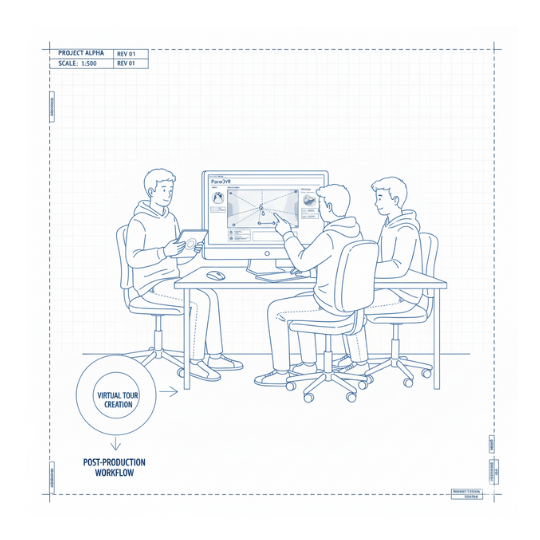

Instalación y configuración inicial:
Pano2VR es el software profesional para crear tours virtuales interactivos:
- Descargad Pano2VR 7 desde www.ggnome.com (versión de prueba gratuita o licencia educativa)
- Instalad el programa siguiendo las instrucciones.
- Abrid Pano2VR y familiarizaos con la interfaz.
Importar las fotografías 360:
Para comenzar vuestro proyecto:
- Abrid Pano2VR y cread un nuevo proyecto.
- Arrastradalas fotografías 360 exportadas al panel de trabajo.
- Cada fotografía se convertirá en un "nodo" (punto de vista o estación del tour).
- Organizad los nodos en el orden lógico de navegación.
Concepto de nodos y navegación
Un nodo representa cada ubicación fotografiada en 360 grados:
- Nodo 1: Entrada del instituto
- Nodo 2: Biblioteca
- Nodo 3: Aula de ciencias
- Y así sucesivamente...
Los nodos se conectan mediante hotspots, que funcionan como "puertas" virtuales entre espacios.
Crear hotspots de navegación
Los hotspots son puntos interactivos que permiten la navegación y añaden contenido:
- Seleccionad un nodo en el panel de navegación.
- Haced clic en el botón "Add Hotspot" (añadir hotspot).
- Elegid el tipo "Point Hotspot" para navegación entre nodos.
- Colocad el hotspot en la imagen 360 donde queréis que aparezca (por ejemplo, en una puerta para ir a otra habitación).
- En las propiedades del hotspot, seleccionad "Action > Go to Node" y elegid el nodo de destino.
- Personalizad el icono del hotspot (flechas, círculos, iconos personalizados).
- Añadid un título descriptivo que aparezca al pasar el ratón (ejemplo: "Ir a la Biblioteca").
Crear hotspots de contenido
Para añadir acertijos, información o elementos multimedia:
Hotspot con texto emergente:
- Añadid un nuevo hotspot en el punto deseado.
- Elegid "Information Hotspot".
- Escribid el título y descripción (ejemplo: acertijo, pista o información histórica).
Hotspot con vídeo:
- Cread un hotspot tipo "Video".
- Enlazad el archivo de vídeo local o URL de YouTube.
- Configurad si se reproduce automáticamente o al hacer clic.
Hotspot con imagen:
- Cread un hotspot tipo "Image".
- Seleccionad la imagen que queréis mostrar.
- Ajustad el tamaño de visualización.
Hotspot con enlace web:
- Cread un hotspot tipo "URL".
- Introducid la dirección web (ejemplo: enlace a recurso compartido con el centro alemán).
Integrar contenido multimedia del escape room
Para crear un escape room rico en interactividad:
- Vídeos: Grabaciones de profesores dando pistas en español y alemán.
- Audios: Narraciones ambientales, efectos de sonido temáticos.
- Cuestionarios: Utilizad los hotspots informativos para plantear preguntas que requieran respuestas colaborativas.
- Mapas interactivos: Añadid un minimapa que muestre la ubicación actual dentro del centro.
- Códigos QR: Incorporad imágenes con códigos QR que enlacen a recursos externos.
Configuración de elementos avanzados
Pano2VR 7 permite opciones profesionales:
- Anclar vídeos de YouTube: Podéis integrar vídeos que se reproduzcan dentro del panorama virtual.
- Múltiples formas de hotspots: Circulares, rectangulares o poligonales según necesidad.
- Efectos visuales: Añadid transiciones suaves entre nodos.
- Música de fondo: Configurad audio ambiental que mejore la experiencia inmersiva.
Exportar el tour virtual
Una vez finalizado el diseño:
- Id a "File > Export > HTML5".
- Elegid la carpeta de destino (cread una carpeta llamada TourVirtual_EscapeRoom).
- Configurad las opciones de exportación:
- Resolución: Alta calidad.
- Incluir todos los multimedia.
- Formato HTML5 (compatible con navegadores modernos).
- Resolución: Alta calidad.
- Haced clic en "Export".
- Pano2VR generará una carpeta con todos los archivos necesarios (HTML, JavaScript, imágenes, etc.).
Bfof8zz22xWaF6g8X:kR(D4o23PtKrrEaJ!Fr6Uxkw6kKC/jeY EoQ9p5iBDwuhWPZdF3cd8zvRdjmAXPVPjDG/Ng74UsgSdi3bLH hadmbaVAJ54tiwJnxb+D/A+QJfPSsHPY+P5WittyJxmPMK:jPW xATxL8oa+R4YNWHxD+x4:V28/K6qmhVfr(nj2EpHaG+ziQP9RH xiPjLd+VymRihe!nZP2nBjvtZg+MGSHL(6Vc5Z!vEXYDq2PRkw ESZSodTp293:p(wZE=